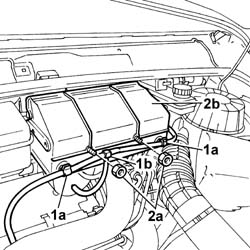
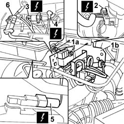
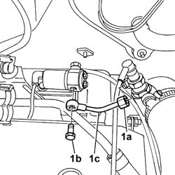
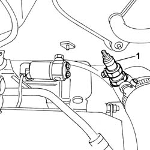
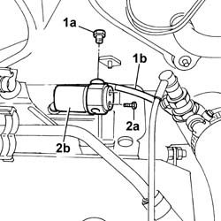
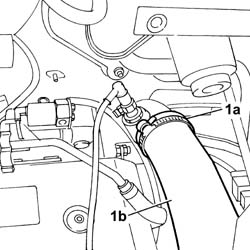
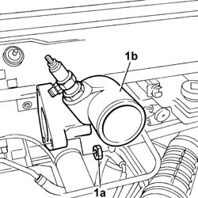

5520C40 THERMOSTARTER - R.R.
- Path
- Procedures > 55 ELECTRICAL EQUIPMENT > 5520 ENGINE STARTING > 5520C COLD STARTING SYSTEM (DIESEL ENGINES) > 5520C40 THERMOSTARTER - R.R.
- Kind
- repair procedure (removal / refitting; the operation number is the code)
- Applies to
- engines: 2.0 JTD 8V, 2.3 JTD 16V, 2.8 JTD 8V; all production periods
- Interactive page
- https://sloeber94.github.io/elrnDB-fDct/en/#/244001354
Applies to: engines: 2.0 JTD 8V, 2.3 JTD 16V, 2.8 JTD 8V; all production periods
 Removing
Removing
 Refitting
Refitting- Disconnect the negative battery terminal.
1. Open the fastening clips (1a) and release the vacuum pipe (1b).
2. Undo the fixing nuts (2a) and remove the protective cover (2b).

Applies to: engines: 2.0 JTD 8V, 2.3 JTD 16V, 2.8 JTD 8V; all production periods
1. Undo the fixing nuts (1a) and remove the solenoid valve mounting bracket (1b) from its housing.
2. Disconnect the electrical connection for the windscreen wiper motor.
Description | Connector | |
|---|---|---|
2 | Windscreen wiper motor | N015 |
3. disconnect the electrical connection for the thermal starter solenoid valve.
Description | Connector | |
|---|---|---|
3 | Thermal starter solenoid valve | L085 |
4. Disconnect the electrical connection for the thermal starter resistance.
Description | Connector | |
|---|---|---|
4 | Thermal starter resistance | O004 |
5. Disconnect the electrical connection for the air flow meter.
Description | Connector | |
|---|---|---|
5 | Air flow meter | K041 |
- Free up the working area.

Applies to: engines: 2.0 JTD 8V, 2.3 JTD 16V, 2.8 JTD 8V; all production periods
- Proceed as described below for the removal of the thermal starter rigid fuel pipe:
1. Undo connector (1a) and connector (1b) and remove the thermal starter rigid fuel pipe (1c).

Applies to: engines: 2.0 JTD 8V, 2.3 JTD 16V, 2.8 JTD 8V; all production periods
- Proceed as described below for the removal of the thermal starter resistance:
- Remove the thermal starter rigid fuel pipe as described above.
1. Undo the thermal starter resistance and remove it.

Applies to: engines: 2.0 JTD 8V, 2.3 JTD 16V, 2.8 JTD 8V; all production periods
- Proceed as described below for the removal of the thermal starter solenoid valve:
- Remove the thermal starter rigid fuel pipe as described above.
1. Undo the connector (1a) and disconnect the thermal starter solenoid fuel supply pipe (1b).
2. undo the fixing bolts (2a) and remove the thermal starter solenoid valve (2b).

Applies to: engines: 2.0 JTD 8V, 2.3 JTD 16V, 2.8 JTD 8V; all production periods
- Proceed as described below for the removal of the thermal starter connector:
- Remove the thermal starter rigid fuel pipe as described above.
1. Open the securing band (1a) and disconnect the air pipe (1b).

Applies to: engines: 2.0 JTD 8V, 2.3 JTD 16V, 2.8 JTD 8V; all production periods
- Undo the fixing nuts and remove the mounting bracket underneath the connector.
1. Undo the fixing nuts (1a) and remove the thermal starter connector (1b).

Applies to: engines: 2.0 JTD 8V, 2.3 JTD 16V, 2.8 JTD 8V; all production periods
Refitting
Removing- Proceed as described below for the refitting of the thermal starter rigid fuel pipe:
- Fit the thermal starter rigid fuel pipe in place and tighten the connector to the resistance and to the solenoid valve.
- Proceed as described below for the refitting of the thermal starter resistance:
- Tighten the thermal starter resistance in place.
- Fit the thermal starter rigid fuel pipe as described above.
- Proceed as described below for the refitting of the thermal starter solenoid valve:
- Place the thermal starter solenoid valve in position and tighten the fixing bolts.
- Fit the thermal starter rigid fuel pipe as described above.
- Proceed as described below for the refitting of the thermal starter connector:
- Fit the thermal starter connector mounting bracket and connector in place and tighten the fixing nuts.
- Fit the thermal starter rigid fuel pipe as described above.
- Place the solenoid valve mounting bracket in position and tighten the fixing nuts.
- Connect the electrical connection for the windscreen wiper motor.
Description | Connector | |
|---|---|---|
- | Windscreen wiper motor | N015 |
- Connect the electrical connection for the thermal starter solenoid valve.
Description | Connector | |
|---|---|---|
- | Thermal starter solenoid valve | L085 |
- Connect the electrical connection for the thermal starter resistance.
Description | Connector | |
|---|---|---|
- | Thermal starter resistance | O004 |
- Connect the electrical connection for the air flow meter.
Description | Connector | |
|---|---|---|
- | Air flow meter | K041 |
- Connect the electrical connection.
- Fit the protective cover in place and tighten the nuts.
- Fit the vacuum pipe on the cover fastening clips.
- Connect the negative battery terminal.